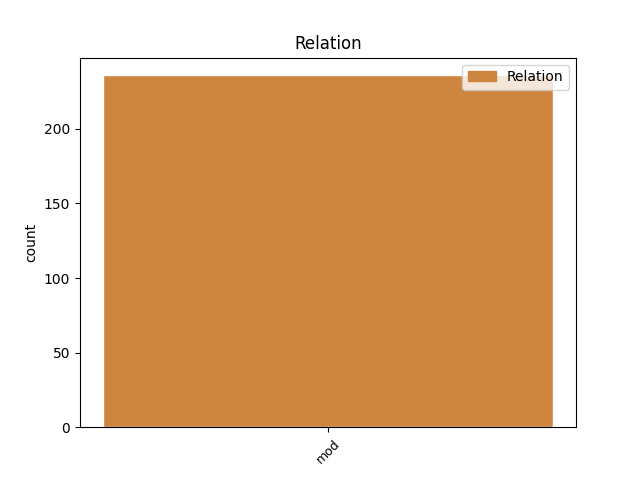
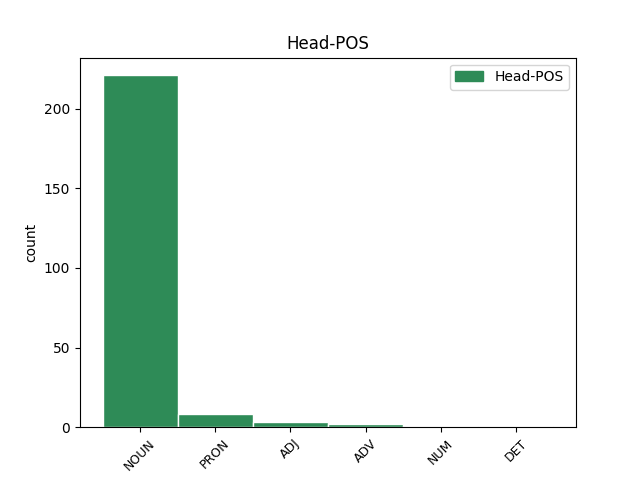
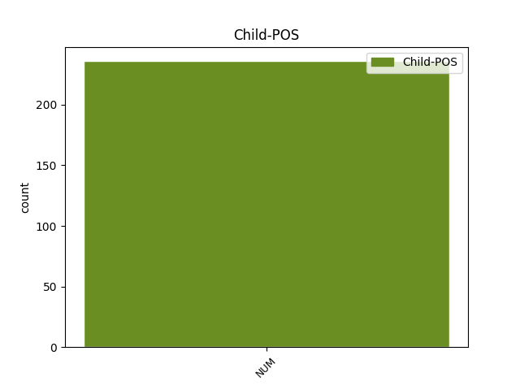

Distribution of features within this leaf



Agreement Rules sorted by frequency.
- When the dependent token is the modifer(mod) of the head token, and the head token is NOUN and the dependent token is NUM.
1 Ľudstvo _ _ _ _ 0 _ _ _
2 svojou _ _ _ _ 0 _ _ _
3 usilovnosťou _ _ _ _ 0 _ _ _
4 prispelo _ _ _ _ 0 _ _ _
5 k _ _ _ _ 0 _ _ _
6 zrodu _ _ _ _ 0 _ _ _
7 dvoch dva NUM NNfp2 Case=Gen|Gender=Fem|Number=Plur 9 mod _ _
8 svetových _ _ _ _ 0 _ _ _
9 vojen vojna NOUN SSfp2 Case=Gen|Gender=Fem|Number=Plur 0 _ _ _
10 , _ _ _ _ 0 _ _ _
11 ba _ _ _ _ 0 _ _ _
12 v _ _ _ _ 0 _ _ _
13 niektorých _ _ _ _ 0 _ _ _
14 kútoch _ _ _ _ 0 _ _ _
15 Zeme _ _ _ _ 0 _ _ _
16 vojny _ _ _ _ 0 _ _ _
17 pokračujú _ _ _ _ 0 _ _ _
18 . _ _ _ _ 0 _ _ _
1 Názov _ _ _ _ 0 _ _ _
2 toho _ _ _ _ 0 _ _ _
3 miesta _ _ _ _ 0 _ _ _
4 nám my PRON PPhp3 Case=Dat|Number=Plur|Person=1|PronType=Prs 0 _ _ _
5 obidvom obidva NUM NNmp3 Animacy=Anim|Case=Dat|Gender=Masc|Number=Plur 4 mod _ _
6 vyhovoval _ _ _ _ 0 _ _ _
7 . _ _ _ _ 0 _ _ _
1 “ _ _ _ _ 0 _ _ _
2 Tu _ _ _ _ 0 _ _ _
3 býva _ _ _ _ 0 _ _ _
4 jeden jeden NUM NFms1 Animacy=Anim|Case=Nom|Gender=Masc|Number=Sing 6 mod _ _
5 môj _ _ _ _ 0 _ _ _
6 známy známy ADJ AAms1x Animacy=Anim|Case=Nom|Degree=Pos|Gender=Masc|Number=Sing 0 _ _ _
7 a _ _ _ _ 0 _ _ _
8 veľmi _ _ _ _ 0 _ _ _
9 rád _ _ _ _ 0 _ _ _
10 prijíma _ _ _ _ 0 _ _ _
11 návštevy _ _ _ _ 0 _ _ _
12 . _ _ _ _ 0 _ _ _
13 “ _ _ _ _ 0 _ _ _
1 Štyridsať štyridsať NUM NUns1 Case=Nom|Gender=Neut|Number=Sing 0 _ _ _
2 dva dva NUM NNns1 Case=Nom|Gender=Neut|Number=Sing 1 mod _ _
3 takýchto _ _ _ _ 0 _ _ _
4 odliatkov _ _ _ _ 0 _ _ _
5 bolo _ _ _ _ 0 _ _ _
6 poslaných _ _ _ _ 0 _ _ _
7 do _ _ _ _ 0 _ _ _
8 Moskvy _ _ _ _ 0 _ _ _
9 , _ _ _ _ 0 _ _ _
10 kde _ _ _ _ 0 _ _ _
11 ich _ _ _ _ 0 _ _ _
12 skúmal _ _ _ _ 0 _ _ _
13 I _ _ _ _ 0 _ _ _
14 . _ _ _ _ 0 _ _ _
15 A _ _ _ _ 0 _ _ _
16 . _ _ _ _ 0 _ _ _
17 Ščepkin _ _ _ _ 0 _ _ _
18 , _ _ _ _ 0 _ _ _
19 autor _ _ _ _ 0 _ _ _
20 prvej _ _ _ _ 0 _ _ _
21 práce _ _ _ _ 0 _ _ _
22 o _ _ _ _ 0 _ _ _
23 nich _ _ _ _ 0 _ _ _
24 . _ _ _ _ 0 _ _ _
1 Všetci všetok DET PFmp1 Animacy=Anim|Case=Nom|Gender=Masc|Number=Plur|PronType=Tot 0 _ _ _
2 traja tri NUM NNmp1 Animacy=Anim|Case=Nom|Gender=Masc|Number=Plur 1 mod _ _
3 sme _ _ _ _ 0 _ _ _
4 sa _ _ _ _ 0 _ _ _
5 hystericky _ _ _ _ 0 _ _ _
6 rehotali _ _ _ _ 0 _ _ _
7 na _ _ _ _ 0 _ _ _
8 pozadí _ _ _ _ 0 _ _ _
9 čudných _ _ _ _ 0 _ _ _
10 tropických _ _ _ _ 0 _ _ _
11 rastlín _ _ _ _ 0 _ _ _
12 v _ _ _ _ 0 _ _ _
13 plastových _ _ _ _ 0 _ _ _
14 črepníkoch _ _ _ _ 0 _ _ _
15 . _ _ _ _ 0 _ _ _
1 Maja _ _ _ _ 0 _ _ _
2 mu _ _ _ _ 0 _ _ _
3 nemohla _ _ _ _ 0 _ _ _
4 uniknúť _ _ _ _ 0 _ _ _
5 , _ _ _ _ 0 _ _ _
6 lebo _ _ _ _ 0 _ _ _
7 lietal _ _ _ _ 0 _ _ _
8 tri tri NUM NNip4 Animacy=Inan|Case=Acc|Gender=Masc|Number=Plur 9 mod _ _
9 razy raz ADV NSip4 Animacy=Inan|Case=Acc|Gender=Masc|Number=Plur|NumType=Mult 0 _ _ _
10 rýchlejšie _ _ _ _ 0 _ _ _
11 ako _ _ _ _ 0 _ _ _
12 ona _ _ _ _ 0 _ _ _
13 a _ _ _ _ 0 _ _ _
14 určite _ _ _ _ 0 _ _ _
15 by _ _ _ _ 0 _ _ _
16 ju _ _ _ _ 0 _ _ _
17 chytil _ _ _ _ 0 _ _ _
18 . _ _ _ _ 0 _ _ _
Disagree Examples:
1 Pôvodne _ _ _ _ 0 _ _ _
2 bol _ _ _ _ 0 _ _ _
3 umiestnený _ _ _ _ 0 _ _ _
4 na _ _ _ _ 0 _ _ _
5 rímse rímsa NOUN SSfs6 Case=Loc|Gender=Fem|Number=Sing 0 _ _ _
6 jedného jeden NUM NFns2 Case=Gen|Gender=Neut|Number=Sing 5 mod _ _
7 z _ _ _ _ 0 _ _ _
8 okien _ _ _ _ 0 _ _ _
9 ústrednej _ _ _ _ 0 _ _ _
10 veže _ _ _ _ 0 _ _ _
11 kupoly _ _ _ _ 0 _ _ _
12 . _ _ _ _ 0 _ _ _
1 N _ _ _ _ 0 _ _ _
2 . _ _ _ _ 0 _ _ _
3 P _ _ _ _ 0 _ _ _
4 . _ _ _ _ 0 _ _ _
5 Lichačev _ _ _ _ 0 _ _ _
6 bol _ _ _ _ 0 _ _ _
7 tiež _ _ _ _ 0 _ _ _
8 autorom autor NOUN SSms7 Animacy=Anim|Case=Ins|Gender=Masc|Number=Sing 0 _ _ _
9 jednej jeden NUM NFfs2 Case=Gen|Gender=Fem|Number=Sing 8 mod _ _
10 z _ _ _ _ 0 _ _ _
11 prvých _ _ _ _ 0 _ _ _
12 teoretických _ _ _ _ 0 _ _ _
13 prác _ _ _ _ 0 _ _ _
14 o _ _ _ _ 0 _ _ _
15 uvedených _ _ _ _ 0 _ _ _
16 pečatiach _ _ _ _ 0 _ _ _
17 . _ _ _ _ 0 _ _ _
1 Videla _ _ _ _ 0 _ _ _
2 som _ _ _ _ 0 _ _ _
3 ju _ _ _ _ 0 _ _ _
4 zopár zopár NUM NUns4 Case=Acc|Gender=Neut|Number=Sing 5 mod _ _
5 ráz raz ADV NSip2 Animacy=Inan|Case=Gen|Gender=Masc|Number=Plur|NumType=Mult 0 _ _ _
6 na _ _ _ _ 0 _ _ _
7 plaveckých _ _ _ _ 0 _ _ _
8 pretekoch _ _ _ _ 0 _ _ _
9 , _ _ _ _ 0 _ _ _
10 lenže _ _ _ _ 0 _ _ _
11 nikdy _ _ _ _ 0 _ _ _
12 nás _ _ _ _ 0 _ _ _
13 nikto _ _ _ _ 0 _ _ _
14 nepredstavil _ _ _ _ 0 _ _ _
15 . _ _ _ _ 0 _ _ _
1 " _ _ _ _ 0 _ _ _
2 Niežeby _ _ _ _ 0 _ _ _
3 som _ _ _ _ 0 _ _ _
4 tam _ _ _ _ 0 _ _ _
5 mal _ _ _ _ 0 _ _ _
6 veľa veľa NUM NUns4 Case=Acc|Gender=Neut|Number=Sing 7 mod _ _
7 vecí vec NOUN SSfp2 Case=Gen|Gender=Fem|Number=Plur 0 _ _ _
8 . _ _ _ _ 0 _ _ _
1 " _ _ _ _ 0 _ _ _
2 Mám _ _ _ _ 0 _ _ _
3 tridsaťdeväť tridsaťdeväť NUM NUns4 Case=Acc|Gender=Neut|Number=Sing 4 mod _ _
4 rokov rok NOUN SSip2 Animacy=Inan|Case=Gen|Gender=Masc|Number=Plur 0 _ _ _
5 . _ _ _ _ 0 _ _ _